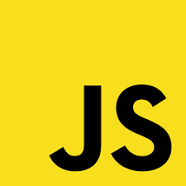
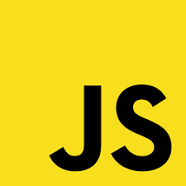

Јазици и стандарди
Страната е изработено од комбинација од : -HTML(hypertext markup language) како скелетот на страната;
-CSS(Cascading Style Sheets) кој дава изглед на страната и можноста за адаптабилност со користење на "@media" тагот во CSS;
-Javascript заедно со jquery библиотеката, е моќен програмски јазик кој ги дава некои од ефектите на страната како и копчето за враќање на почеток;
 
